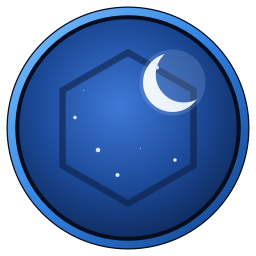
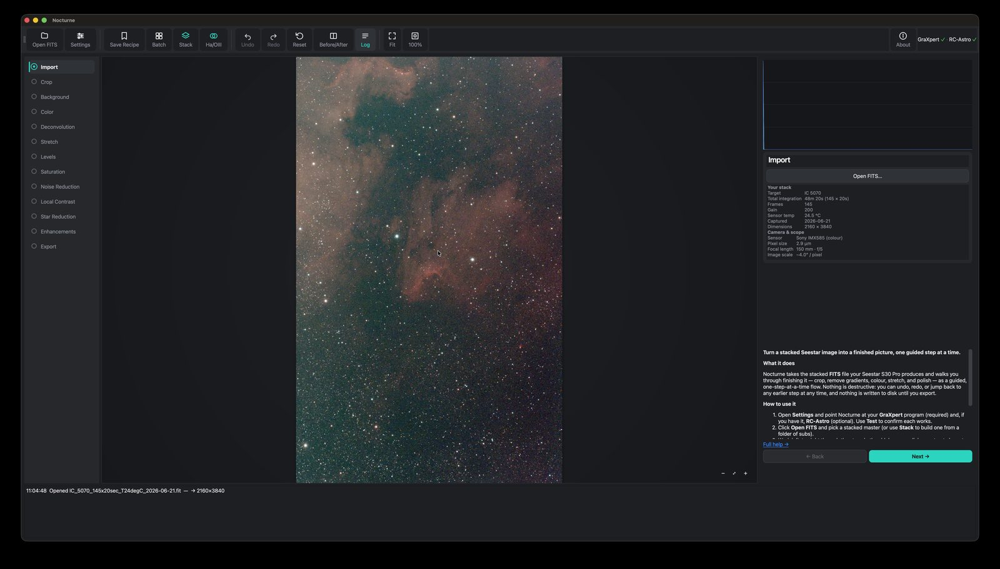
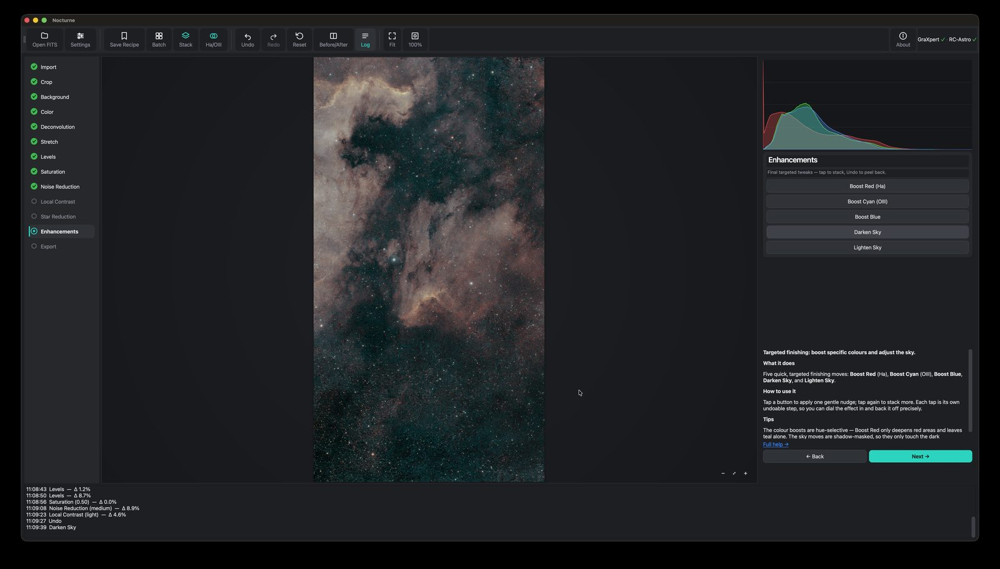
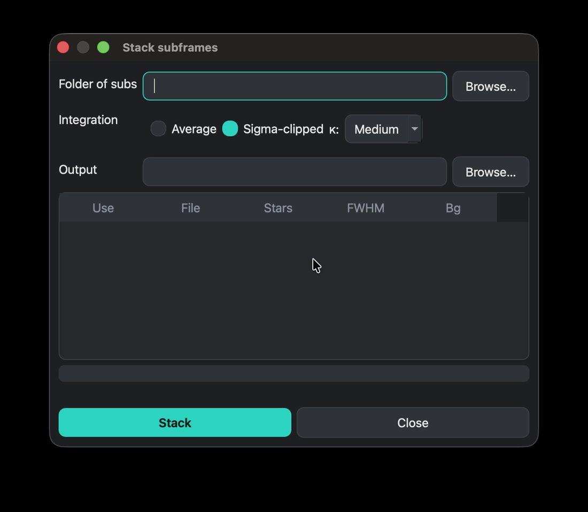
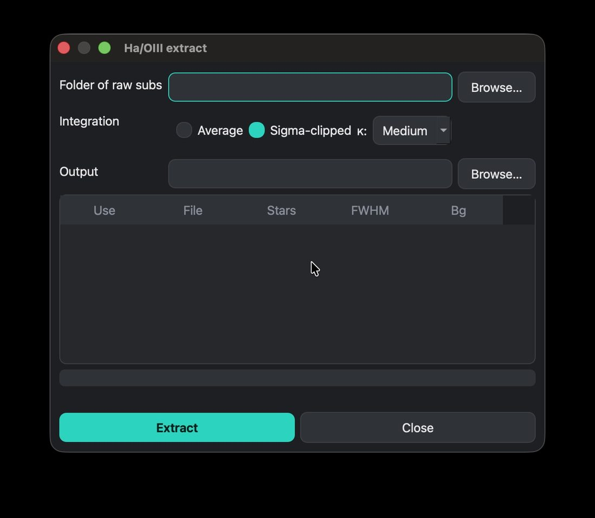
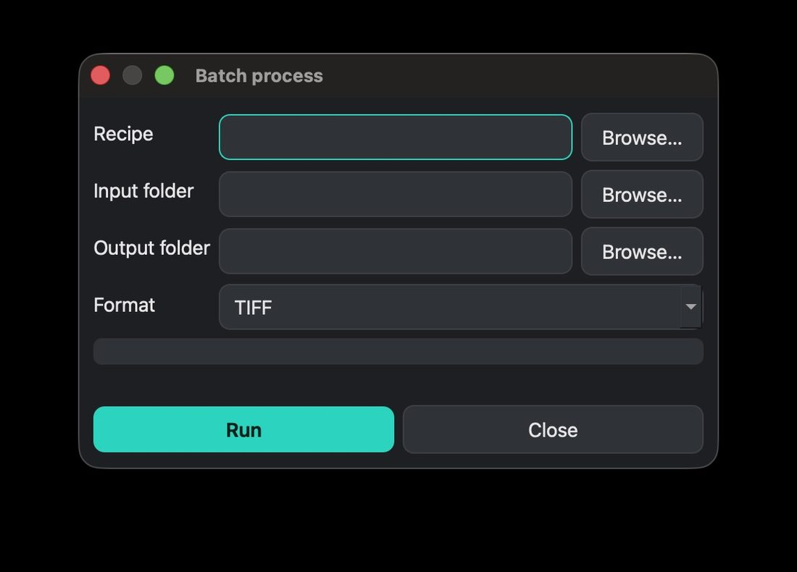

Guided, non-destructive flow
Crop → Background → Colour → Stretch → Levels → Star Reduction → Export. Simple Light/Medium/Strong choices, live before/after, and undo anywhere. Nothing is destructive until you export.

NocturneFor the ZWO Seestar S30 Pro
Guided astrophotography processing for smart-telescope stacks. Turn a stacked FITS into a finished picture — one step at a time.
Not affiliated with ZWO, GraXpert, or RC-Astro — just a fan with a Seestar and too many clear-sky ambitions.
A guided, non-destructive flow with a live preview and full undo at every step — driving the same professional tools under the hood.
Crop → Background → Colour → Stretch → Levels → Star Reduction → Export. Simple Light/Medium/Strong choices, live before/after, and undo anywhere. Nothing is destructive until you export.
Turn a raw dualband (Ha/OIII) master into a finished colour image in a single press — stars removed, nebula colour-mapped, stars screened back. Advanced sliders if you want them.
Point it at a folder of subs; it grades and rejects bad frames, registers (handling alt-az field rotation), and integrates a clean master.
Split a dualband master into separate Ha and OIII channels for external palette work — or just let Colourise do it for you.
Save your sequence of steps and replay it on another image — or a whole folder at once.
Tap-to-stack colour boosts (Ha / OIII / blue) and sky darken/lighten — each nudge individually undoable.





Nocturne explains the concepts as you go, so you learn while you process.
Raw data is nearly black until it's stretched. Nocturne previews it stretched and commits the real stretch when you're ready.
Your Seestar's LP filter captures Ha + OIII. One press maps that narrowband data into a natural two-gas colour image.
Every step is cached. Undo, redo, compare before/after, or jump back to any step — nothing is lost until you export.
Powers background extraction. Free to download — just point Nocturne at it in Settings.
BlurX / NoiseX / StarX for pro-grade deconvolution, denoise and star handling. Every step has a free fallback, so Nocturne works fully without it — it's simply better with it.
Nocturne drives these as separate installs and does not bundle them. Not affiliated with ZWO, GraXpert, or RC-Astro.
macOS · ~314 MB · free · beta
It isn't notarized yet, so on first launch macOS may block it. Right-click the app → Open → Open, or allow it under System Settings → Privacy & Security.
Nocturne is early, and more test data makes it better. Share a stacked dualband/LP FITS master and you'll be credited in-app as a Photon Donor.
Max 512 MB · a stacked FITS master (.fit / .fits). Donated data is used only to test and improve Nocturne — never shared, sold, or republished.